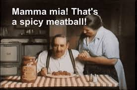

MeatBalls
Nice meatballs and spagetti saaar-chef bangdu

Da Plot:
"These ain’t your sweet little Italian granny’s polite polpette—oh no, these bad boys are big, bold, and ready to roll into your mouth like they own the place.They’re the kind of meatballs that wink at you from the plate and say, ‘Mamma ohh!!!, size does matter."
Ingredients to steal from yo gran mami:
- 1 lb ground beef: Sourced from cows that knew they were destined for something spicy and inappropriate.
- 1 egg: Preferably laid by a hen with a dirty mind
- ½ cup breadcrumbs: Stale, like Nonna’s opinion of your life choices after she catches you making these.
- 2 cloves garlic: Minced fine, because even meatballs need a little foreplay.
- A pinch of Nonna’s disapproval: Adds that bitter tang only generational judgment can provide.
How to birth this abomination:
- Mix beef, egg, and breadcrumbs with reckless abandon
- Whisper 'Mamma ohh!!!' seductively to the garlic
- Scream 'Mamma ohh!!!' while stirring
- Roll into balls big enough to raise eyebrows
- Cook in marinara until they’re hot and juicy, because nothing beats wet balls
Papi!!Take me back Home!!